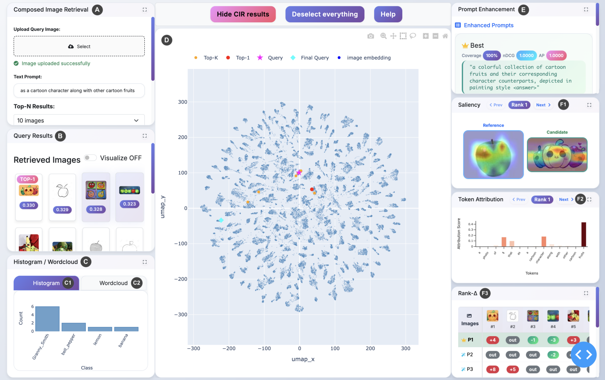
InfoCIR: Multimedia Analysis for Composed Image Retrieval
Ioannis Dravilas ,Ioannis Kapetangeorgis, Anastasios Latsoudis
Abstract:
Despite the growing popularity of CLIP-based Composed Image Retrieval (CIR), developers still lack tools that reveal how multimodal
prompts interact with visual-textual embedding spaces and why small wording changes can dramatically alter the results. We
present InfoCIR, a visual-analytics system that closes this gap by coupling retrieval, explainability, and prompt engineering in a single,
interactive dashboard.
InfoCIR integrates a state-of-the-art CIR back-end (SEARLE [1]) with a six-panel interface that (i) lets users
compose image + text queries, (ii) projects the top-k results into a low dimensional space using Uniform Manifold Approximation and
Projection (UMAP) for spatial reasoning, (iii) overlays similarity-based saliency maps and gradient-derived token-attribution bars for
local explanation, and (iv) employs an LLM-powered prompt enhancer that generates counterfactual variants and visualizes their
impact through an ideal-anchored Rank-∆ heatmap.
A modular architecture built on Plotly-Dash allows new models, datasets, and
attribution methods to be plugged in with minimal effort. We argue that InfoCIR helps diagnose retrieval failures, guides prompt
enhancement, and accelerates insight generation during model development.
Watch a demo of the project here.
(GitHub fork link, Paper link)
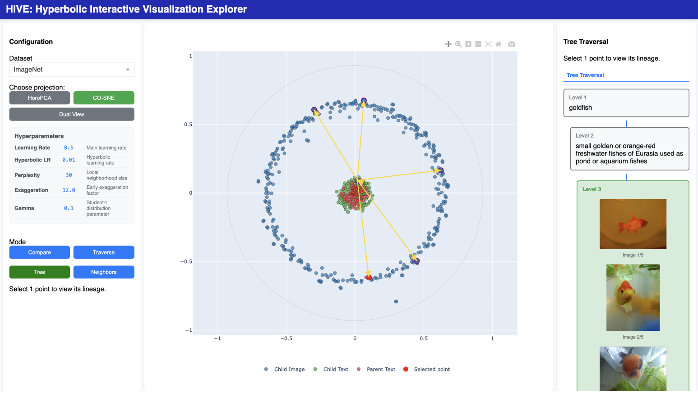
HIVE: A Hyperbolic Interactive Visualization Explorer for Representation Learning
Thijmen Nijdam, Derck Prinzhorn, Jurgen de Heus, Thomas Brouwer
Abstract:
We present HIVE, an interactive dashboard for exploring and interpreting hyperbolic embeddings in deep learning. While
hyperbolic spaces offer inherent advantages for modelling hierarchical data, existing interactive visualization tools remain largely tailored
to Euclidean spaces and curvature-aware tools are mostly static.
To address this, HIVE provides 2D projections via the Poincaré disk
and integrates configurable dimensionality reduction methods. including CO-SNE and HoroPCA. We identify key research needs from
expert interviews and implement them as four interaction modes: comparison, traversal, tree, and neighbors. HIVE enables real-time,
multimodal exploration of hyperbolic embeddings through semantic hierarchy tracing, geodesic interpolation, and projection comparison.
A hybrid evaluation confirms its effectiveness in supporting practical analysis and surfacing meaningful insights into hyperbolic structure.
While currently limited to image and text embeddings, the dashboard shows promise for broader applications, such as reinforcement
learning and graph discovery, highlighting HIVE’s potential as a useful tool for future hyperbolic learning scenarios.
Watch a demo of the project here.
(GitHub fork link, Paper link)
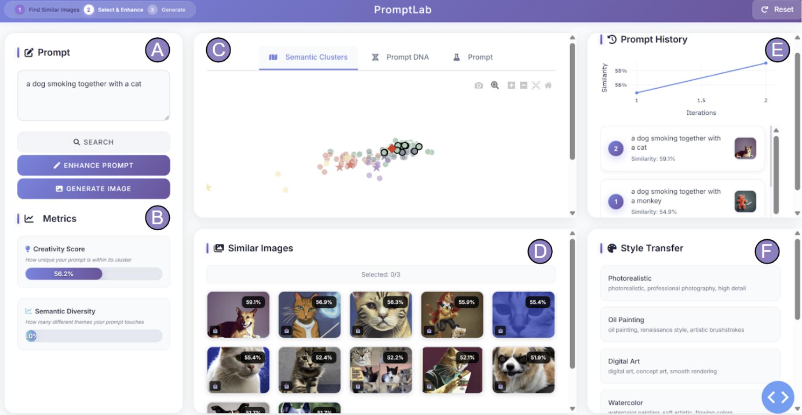
PromptLab: Interactive Visualization and AI-Assisted Prompt Refinement for Image Generation
Alisia Baielli, Iwo Godzwon, Pradyut Nair, Marom Sverdlov
Abstract:
Crafting effective prompts for text-to-image generation models remains a challenging and often trial-and-error process due to the
complex and high-dimensional nature of natural language. We
present PromptLab, an interactive system that empowers users to
explore, refine, and generate image prompts through a combination
of large-scale semantic visualization, AI-assisted prompt enhancement, and real-time image generation. Leveraging a 100k subset of
the Diffusion DB dataset (23), PromptLab embeds prompts into a
semantic space visualized via UMAP (12), enabling intuitive navigation of prompt clusters and retrieval of similar examples. The
system integrates GPT-4 (1) powered prompt rewriting, batch variation generation, and semantic prompt analysis (prompt DNA) to
guide creative exploration. We introduce novel metrics for prompt
creativity and semantic diversity that provide interpretable feedback to users, fostering novel and effective prompt crafting. Together, these components facilitate human-in-the-loop prompt improvement, leading to effective text-to-image generation. We validate our system with a user study involving 10 participants, demonstrating improvements in creativity support, usability, and user satisfaction.
Watch a demo of the project here.
(GitHub fork link, Paper link)
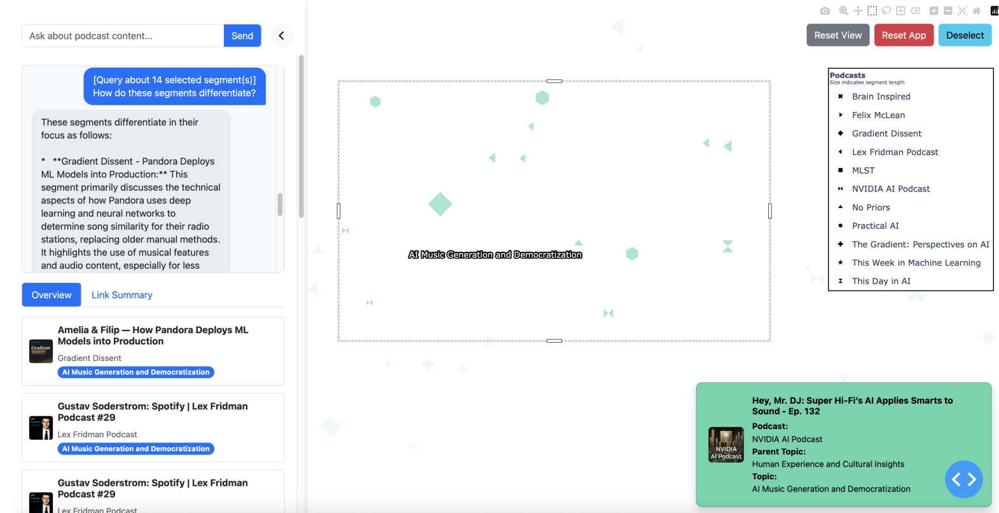
Interactive Podcast Discovery
Anetey Abbey, Joppe Wouts, Robbert Sierhuis, Pascal Mathas
Abstract:
The rapid growth of podcast content poses significant challenges for exploration and discovery, especially due to the linear
and unstructured nature of audio media. We introduce Interactive Podcast Discovery (IPD), a multimodal visual analytics system that
facilitates intuitive access to podcast segments through both semantic visualization and natural language interaction. Our system
leverages a multi-stage LLM-based pipeline for transcript segmentation, topic labeling, and summarization, combined with BERTopic
clustering and UMAP projection to generate a 2D semantic map of podcast content. Users can explore this map via semantic zoom
and glyph-based visualization or engage in goal-directed search using an LLM-powered chatbot interface. The tight integration of these
interfaces supports both coincidental and focused discovery. We evaluate IPD through human-centered studies targeting segmentation
quality, interface usability, and chatbot effectiveness. Our results demonstrate the potential of LLM-driven visual analytics systems to
enhance discovery in large-scale spoken media corpora.
Watch a demo of the project here.
(GitHub fork link, Paper link)
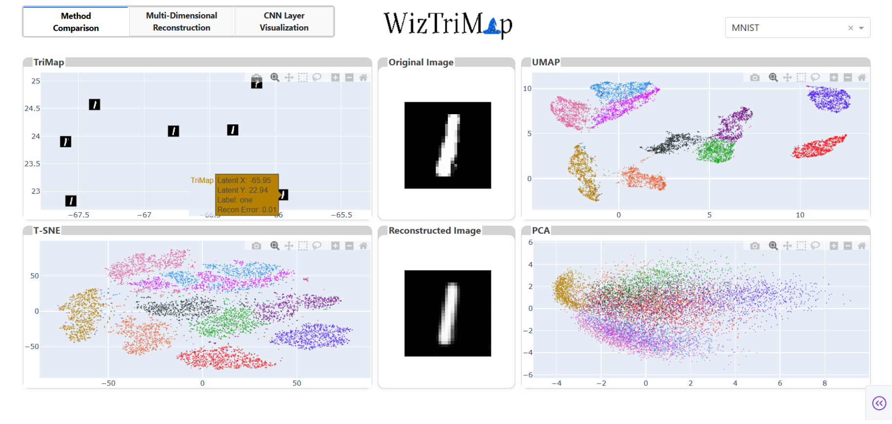
WizTriMap: Scalable and Interpretable 2D Embedding through Multicore Acceleration, Hyperbolic Projection, and Latent Inversion
Chiranjeev Bindra, Cinthya Criollo, Arijit Ghosh, Ina Klaric
Abstract:
The growing adoption of machine learning in high-stakes domains
has led to a rising demand for interpretable and user-centered tools
to explore latent spaces. Dimensionality reduction (DR) techniques
such as TriMap, t-SNE, UMAP, and PCA are widely used for visualizing high-dimensional data, but their interpretability remains
limited by the lack of invertibility and dimensionality control. In
this work, we introduce WizTriMap, an interactive visual analytics system that extends TriMap with an inversion pipeline, multidimensional reconstruction, and CNN-layer feature visualization.
By training decoder networks to project low-dimensional embeddings back to image space, we evaluate the reconstruction quality
across DR methods and dimensions (2D-7D), providing insight into
the structure-preserving capabilities of each technique. We also analyze intermediate CNN embeddings, enabling users to interpret the
evolution of features across layers. A mixed-method user evaluation with AI practitioners highlights the system’s usability, insight
generation, and potential for model diagnostics. Our results show
that TriMap offers strong global structure preservation and benefits
from higher latent dimensionalities when interpretability and reconstruction fidelity are desired. For more details, please refer to the
source code available at our GitHub repository.
Watch a demo of the project here.
(GitHub fork link, Paper link)
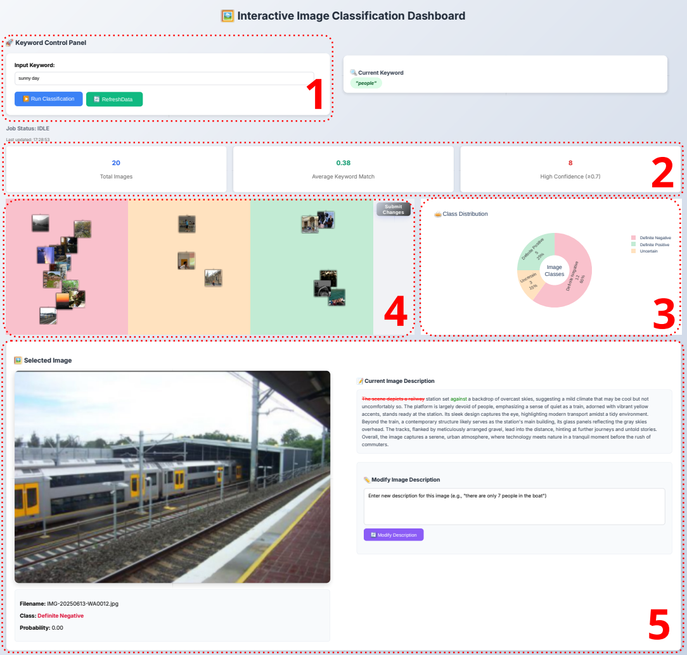
Human-in-the-Loop Visual Analytics Dashboard for Image Classification and Description Editing
Ananta Krishna Wibisono, Wouter Besse, Wietse van Kooten, Darie Petcu
Abstract:
We present a mixed-initiative visualization interface that enables users
to dynamically categorise and explore image collections using natural
language queries and semantic manipulation. Leveraging state-ofthe-art vision-language models (VLMs) and large language models
(LLMs), our system provides categorisation feedback for each image in
response to user-defined keywords. It allows for flexible human-in-theloop interaction through novel drag-and-drop adjustments, based on
ImageSI and IC|TC, and direct prompting to change image descriptions,
supporting both subjective exploration and precise editing. Built on the
Dash framework with a customized Cytoscape interface, that shows realtime updates for enhanced user understanding and control. We evaluate
the system on a sample of the YFCC100M dataset, demonstrating its
capacity to align model behavior with human intent while facilitating
insight through mixed-level interaction. This work contributes to the
emerging paradigm of foundation model-driven multimedia analytics
and human-AI teaming.
Watch a demo of the project here.
(GitHub fork link, Paper link)
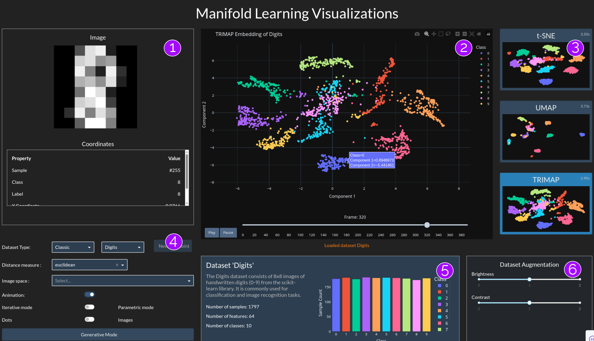
An Interactive Extension of TriMap for Scalable and Insightful High-Dimensional Visualization
Benjamín Hucko, Camille Niessink, Viktória Pravdová, and Wojciech Trejter
Abstract:
TriMap is a powerful dimensionality reduction technique that preserves global structure better than traditional methods like t-SNE and
UMAP. However; it lacks advanced features such as dynamic updates, inverse transformation, and non-Euclidean distance support.
This limits its applicability in interactive analytics settings. In this work, we extend TriMap with several capabilities, namely, enabling
dynamic projection of new data points, inverse mapping from projected space back to the original space, a parametric neural variant
for faster approximation, and support for a wide range of distance metrics beyond Euclidean. These extensions are integrated into
a web-based multimedia analytics tool that supports real-time exploration and manipulation of high-dimensional datasets such as
CIFAR-10, Fashion-MNIST, and PACS. We evaluate our system through both quantitative projection quality metrics and simulated
user tasks, demonstrating that our enhancements significantly improve TriMap’s usability and analytical depth for interactive machine
learning workflows.
Watch a demo of the project here.
(GitHub fork link, Paper link)
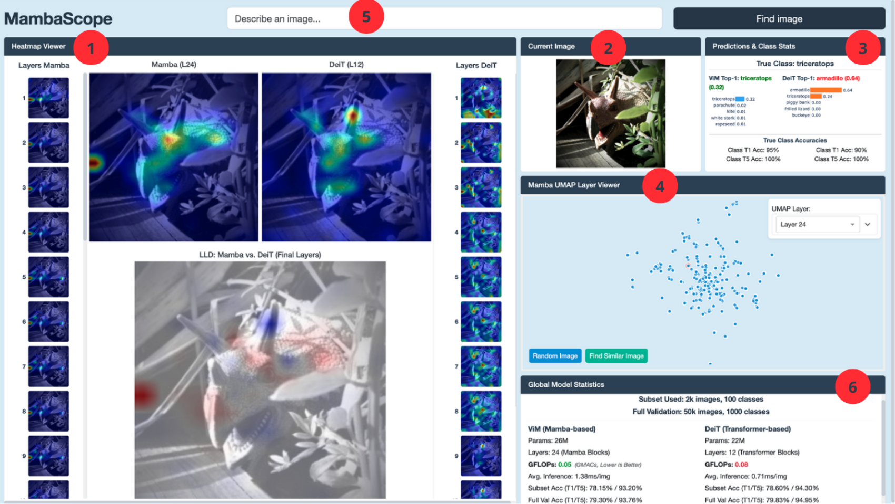
MambaScope: A Visual Tool for the Interactive Exploration of Mamba
Emma Bakker, Nina Delcaro, Owen de Jong
Abstract:
New deep learning architectures like Mamba, a
selective state-space model (SSM), offer competitive performance
to Transformers but lack inherent interpretability due to the
absence of attention mechanisms. This opacity hinders understanding and comparison. We introduce MambaScope, a visual
analytics system for the comparative interpretation of Mambabased and Transformer-based vision models. MambaScope integrates coordinated views of layer-wise saliency maps, interactive
UMAP projections of latent representations and CLIP-powered
semantic search to facilitate exploration of model behavior.
Through a comparative analysis of ViM-small and DeiT-small
and a qualitative user study, we demonstrate that MambaScope
effectively exposes ViM’s internal focus patterns. Our evaluation
shows the system enables users to uncover nuanced architectural
strategies, such as ViM’s more holistic processing versus DeiT’s
patch-focused approach, providing a needed framework for
interpreting emerging deep learning models.
Watch a demo of the project here.
(GitHub fork link, Paper link)
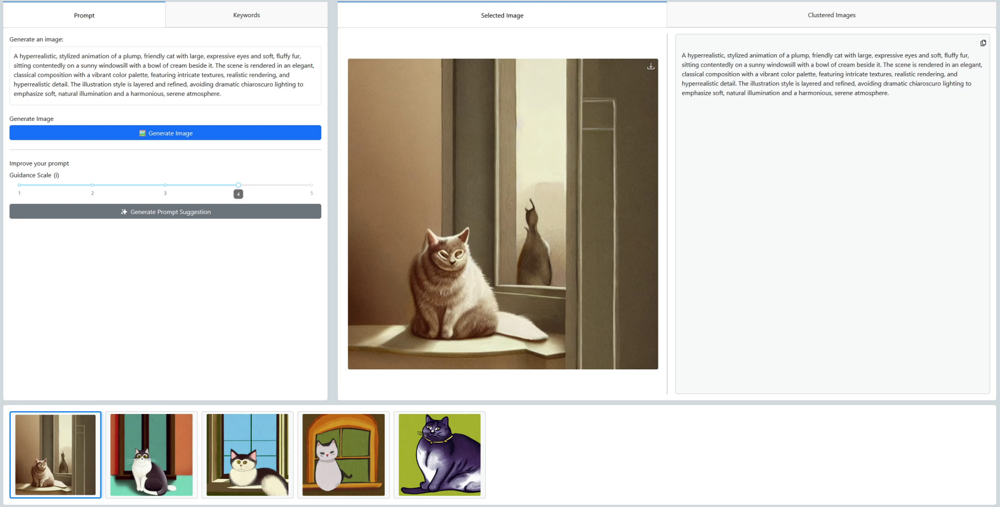
ImPRESS: Iterative Prompt Refinement through Semantic Slider Feedback and Foundation Model Guidance
Ken Maradiaga Rosales, Mathijs v. Sprang, and Koen Veldhorst
Abstract:
Text-to-image generation models such as Stable Diffusion v1.5 have achieved remarkable image quality, but users still face a tedious,
linear trial and error process without access to any prompt history or semantic cues. We introduce ImPRESS (Iterative Prompt
REfinement through Semantic Slider feedback), a web-based dashboard that clusters 10 000 images DiffusionDB images using a
combination of CLIP and UMAP, with interactive keyword sliders and LLM-based prompt suggestion using Qwen3-4B. ImPRESS
tracks generated prompt-image pairs in a persistent history store to allow for backtracking and non-linear exploration. Furthermore,
the dashboard visualizes the generated outputs and references them in a reactive 2D projection, showing where your outputs sit in
semantic space. Temporal evaluation on an NVIDIA A100 shows that each refinement iterations takes about 13 s on average. Early
qualitative analyses demonstrate that tweaking semantic sliders effectively shifts images towards user-selected clusters. ImPRESS is
modular in its generative models, publicly available, and sets the stage for future user studies and potential model enhancements.
Watch a demo of the project here.
(GitHub fork link, Paper link)
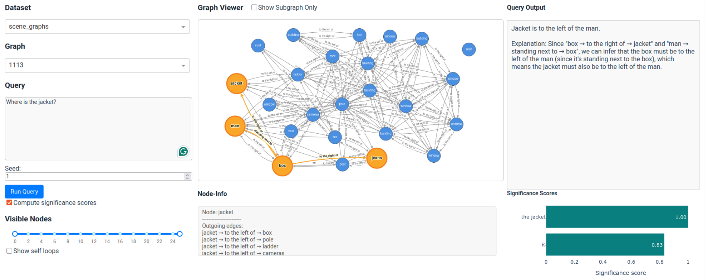
Understanding (Sub)graphs through LLM Commentary and Query Entity Significance Scores
Maarten Drinhuyzen, Jasper van der Valk, David Werkhoven, Xin Yu Zhu
Abstract:
Graph data has increasingly become more prevalent due
to its capabilities of capturing complex structures and relationships between entities. However, querying graphs from
such data remains non-trivial as it often requires knowledge of query languages. This, in turn, limits users who
do not have a technical background. To address the issue,
this study proposes an interactive and user-friendly visual
system that allows users to retrieve graphs using natural
language queries. Additionally, besides the free text graph
querying component, the interface also provides users with
the option to improve the interpretability of their graph
queries. In particular, this is done by leveraging query term
significance scores, which subsequently serve as phraselevel feedback over the input query.
Watch a demo of the project here.
(GitHub fork link, Paper link)
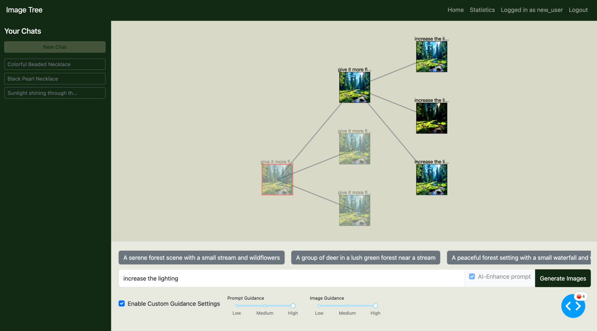
Image Tree: A Dual-System for Guided Image Generation and Insight
Emma Boccaletti, Gilian Honkoop, Vincent Loos, Ilona Masiuk
Abstract:
The rise of image-to-image generation models has empowered creators, yet accurately prompting these models
and effectively tuning hyperparameters remain significant challenges, often leading to time-consuming trial-and-error
processes. To address this, we introduce Image Tree, an interactive visual analytics tool designed to enhance user
exploration and control in image-to-image workflows. Our system showcases multiple image generations for each prompt
under varied hyperparameter settings within a unique thread-based view, offering clear oversight and facilitating the
discovery of optimal configurations. Furthermore, Image Tree includes an analytics dashboard that provides generalized
insights by tracking prompt and image novelty, hyperparameter influence, and keyword use across past generation
processes. This enables users to understand the impact of their decisions, transpose high-level insights into effective
design strategies, and refine their generative approach with control over model settings. The quality of visual solutions
offered by Image Tree remains to be evaluated through a user study, under the methodology put forward in this paper.
Watch a demo of the project here.
(GitHub fork link, Paper link)